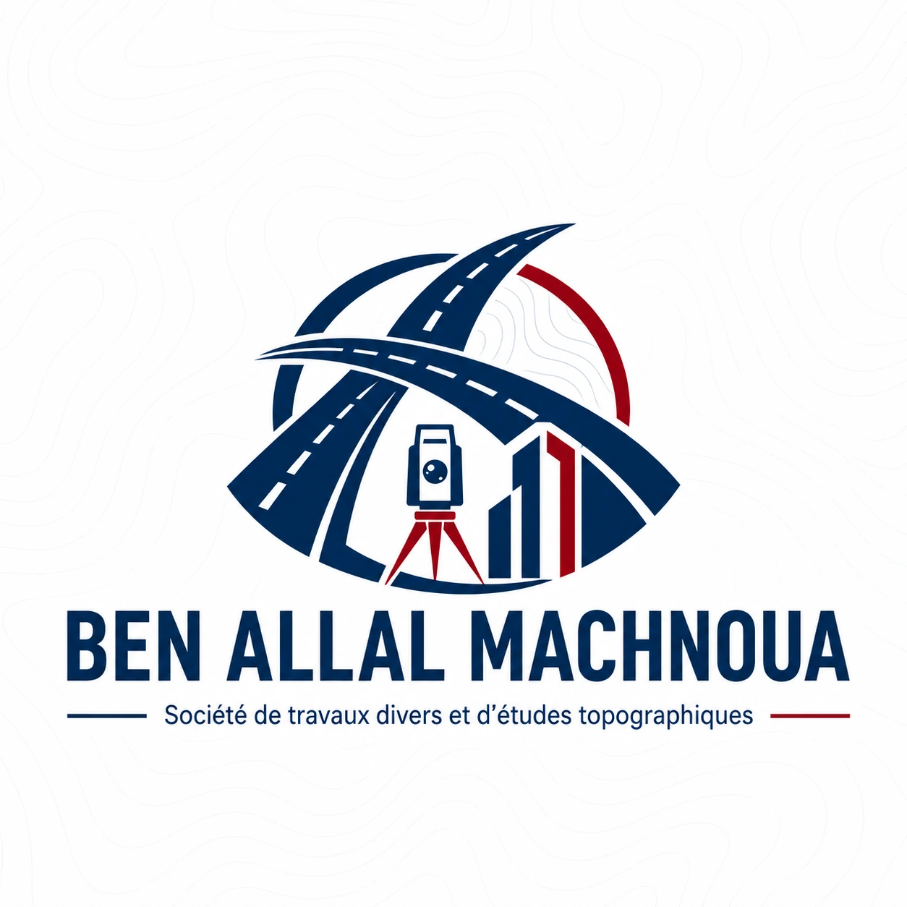

Études topographiques
Réalisation d'études topographiques précises pour vos projets d'aménagement, de construction ou de délimitation foncière.
S.A.R.L AU • Boujdour, Maroc
Travaux divers & études topographiques
Société spécialisée dans les travaux divers et les études topographiques, implantée à Boujdour. Nous accompagnons les particuliers, les entreprises et les administrations avec rigueur et professionnalisme.

Nos domaines d'expertise
BEN ALLAL MACHNOUA met à votre disposition une expertise technique complète dans les domaines des travaux topographiques et des travaux divers, au service des administrations, des entreprises et des particuliers.
Réalisation d'études topographiques précises pour vos projets d'aménagement, de construction ou de délimitation foncière.
Exécution de travaux variés avec une approche rigoureuse, adaptée aux exigences de chaque projet et chantier.
Collecte et traitement des données de terrain pour une représentation précise et fiable de la réalité géographique.
Matérialisation sur le terrain des points définis dans les plans et dossiers techniques, avec exactitude et conformité.
Élaboration de plans détaillés et normalisés, supports indispensables à tout projet d'ingénierie ou d'urbanisme.
Accompagnement et conseil technique auprès des maîtres d'ouvrage, des administrations et des porteurs de projets.
Qui sommes-nous
BEN ALLAL MACHNOUA S.A.R.L AU est une société marocaine basée à Boujdour, spécialisée dans les travaux divers et les études topographiques. Forte d'une expérience terrain et d'un engagement envers la qualité, elle intervient auprès des institutions publiques, des entreprises et des particuliers pour répondre à leurs besoins avec professionnalisme et fiabilité.
Prenez contact
Contactez BEN ALLAL MACHNOUA par téléphone, WhatsApp ou email pour toute demande d'information, de devis ou d'intervention technique.